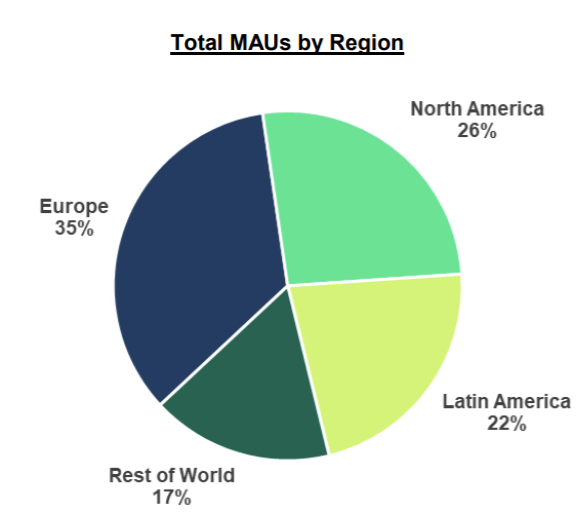

Durante la cuarentena, producto de la pandemia por la Covid-19. Las plataformas de streaming han servido como fuente principal de entretenimiento. En este año han tenido creciente demanda de sus servicios. Spotify es la mayor de las especializadas en música en cuanto a cantidad de usuarios llegando a una cantidad de 286 millones de usuarios activos mensualmente, lo cual le permite ocupar el 36% del sector. Y cuando algunas han tenido un crecimiento explosivo, es razonable preguntar: ¿Cómo le va a Spotify?
La cantidad de usuarios va bien, pero lleva un rato de esa forma, con un ritmo de alrededor de 16 millones de usuarios mensuales desde antes del impacto del SARS-COV-2. Sin embargo en el tercer trimestre de este año ha sido mayor con 20 millones usuarios más. Así que se podría decir que no hubo mucho cambio en el ritmo de llegada de nuevos usuarios en esta plataforma.
Por lo que se puede ver el comportamiento de los tops semanales de esta plataforma han tenido pequeñas variaciones en este año. En los primeros tops se observa que el top uno tiene cerca de 5 millones de streams y es posbile sobrepase al top 10 por alrededor de 2 millones. Sin embargo a medida que avanza el año el primer lugar de este ranking es menos consumido y se mueve entre 4 y 3 millones; además su diferencia con la décima posición es recortada significativamente. Moviéndose alrededor de 1 millón.
Se denota una mayor diversidad en la música escuchada diferente a la tendencia principal, alejándose un poco de los números 1. Circunstancia que se da probablemente debido a más usuarios explorando en la plataforma y a escuchar más música en circunstancias diferentes como trabajando desde casa, que no eran tan usuales con anterioridad.
Observando el mapa podemos ver la diferencia entre el top global y el top 1 de cada país cada semana. El top del mundo suele coincidir con el de Estados Unidos y el Reino Unido, y con algunos otros países de Norteamérica y Europa. Viendo que entre ambos cubren aproximadamente el 60% del uso mundial, tiene sentido tengan gran peso a la hora de marcar tendencia.
Este año no ha sido precisamente mejor para la plataforma en comparación a anteriores desde el punto de vista de cantidad de usuarios aunque ha sido bueno, pero sus tendencias han tenido cierto cambio interesante, se ha propiciado una mayor diversidad musical.
Puede acceder a los datos utilizado en el repositorio aquí